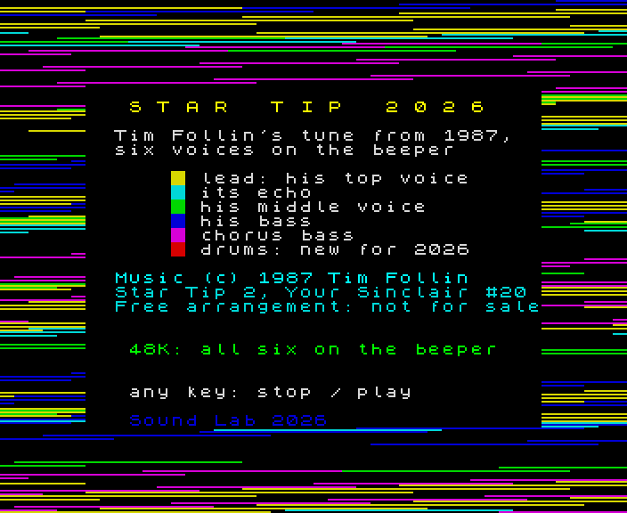

48K128K13 November 2026
Star Tip 2026: Tim Follin's 1987 tune, on six voices
In 1987 Your Sinclair printed a three-voice tune by Tim Follin as a type-in, and said he was working on a six-channel routine with chorus bass, echo, portamento and ADSR. We could not find that it was ever released. This is his tune on our six-voice engine, with an echo, a chorused bass and drums.
The tune is Tim Follin's, © 1987. Your Sinclair #20 printed it with his word that he "doesn't mind you using the tune in your own programs" but keeps the copyright, "so it can't be used for commercial games". This arrangement is free, credits him on its screen, and is not for sale.
His notes are played on our own engine. None of his code is used. On a 128K there is also a version for the AY chip.
a 48K, all six voices on the beeper, 36 s
a 128K, the snare on the AY too

How it works
Reading his notes
Star Tip 2 was 1,340 bytes typed in from the magazine: 290 bytes of player and the rest the tune. That is 18 sections, each with a chord length and an envelope, then three-note chords. His player counted pitch in trips of a loop that got longer whenever a voice sounded. So each chord was turned into frequencies with that stretch allowed for, then rounded to the nearest semitone. They land 12 cents from it on average.
In places he put two voices on the same note slightly apart, his own chorus. Those keep their detune.
What 2026 adds
His top voice becomes our lead, with vibrato on long notes and a short slide into them. Behind it, a fourth voice echoes the lead a dotted eighth later and quieter. His middle voice is the harmony. His bass is doubled by a fifth voice 0.9% sharp, so the two beat slowly against each other: a chorused bass, one of the things his promised routine was to have.
The sixth voice is a drum kit, which the original did not have: falling tones for kick and snare, and a high blip for the hat. On a 128K the snare also strikes the AY's noise channel.
His envelopes become a few kinds of attack and decay: an organ for most of it, a bell and a swell for the long opening chord, plucks, and his three-voice drones.
The engine
It is the same engine as Six Voices. Six 16-bit pitch counters each get a slice of a 404 T loop and put their bit on the speaker in turn, so the ear hears all six together. The pulse width is each voice's volume.
How it was checked
Checked by the Sound Lab's build on both machines. After every one of the tune's 1,885 ticks (and 60 into the second time round), every voice's pitch and pulse width in the Z80 equal what a model of the engine in JavaScript says they should be. The 128K's AY writes are checked too: 108 of them, as the model has them. The tuning is measured against the loop and tick lengths the tune assumed. A key stops it and starts it again, and the tape loads on both machines. Not yet heard on a real Spectrum.
Screens
As our emulator draws it
Full frames, border and all. Click a picture to see it bigger.


Download
Load it yourself
For the 48K and the 128K. Each machine has its own tape; its .tzx and .tap hold the same blocks.
- In an emulator (ZX Spin, Retro Virtual Machine, Fuse and others): open the
.tapon a 48K or a 128K. On a 128K, pick Tape Loader; on a 48K, typeLOAD "". These are ordinary tapes, so fast loading is fine. - Turn the sound up. On a 48K all six voices come from the beeper; on a 128K the snare also plays on the AY. The AY versions need a 128K or +2.
- Any key stops the tune; another plays it again from the top.
- On a real Spectrum: play the tape into the EAR socket from a tape player or a TZX player.